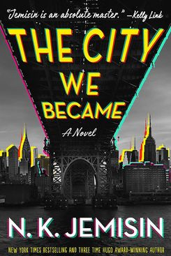

Book Title
In Manhattan, a young grad student gets off the train and realizes he doesn't remember who he is, where he's from, or even his own name. But he can sense the beating heart of the city, see its history, and feel its power. In the Bronx, a Lenape gallery director discovers strange graffiti scattered throughout the city, so beautiful and powerful it's as if the paint is literally calling to her. In Brooklyn, a politician and mother finds she can hear the songs of her city, pulsing to the beat of her Louboutin heels. And they're not the only ones.